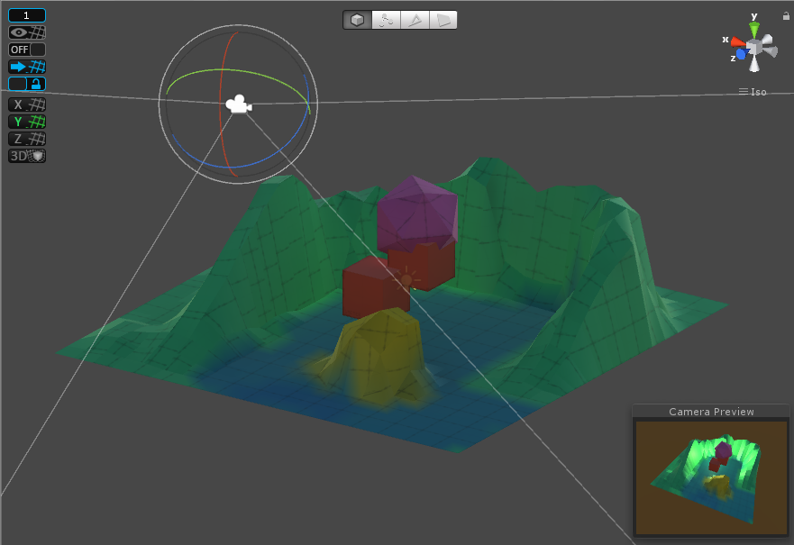
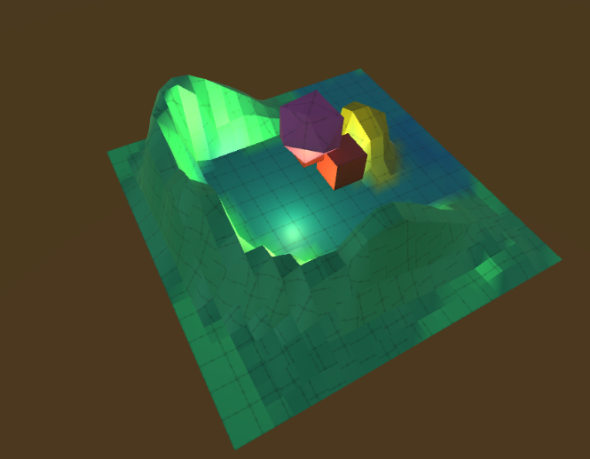
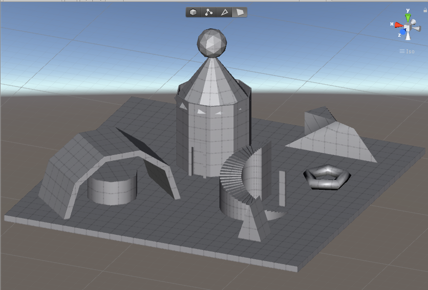

2018-05-26: Experimenting with ProGrids and Polybrush
ProGrids and Polybrush, as well as Pro Builder, are essential tools in 3D world creation within Unity. Both are rather approachable after watching a few tutorial videos and offer potential in the intuative 3D space development.
 2018-05-25: Experimenting with Pro Builder
3D world design in Unity did not come intuitively. Through the use of Pro Builder I can see how skills can be developed such that design can be more intuitively implemented in Unity 3D.
